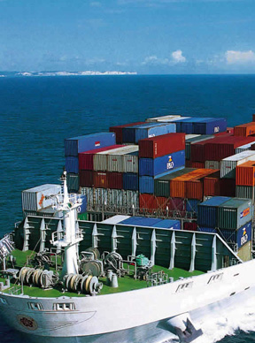

- Products -
Freight Forwarder System
Freight Forwarders are the integral link between Importers and Exporters, and the logistics of shipping goods. We provide the ability to view and manage all landside aspects of your shipments – from the Customs Broker to the Transport Operator to the Shipping Line. Our solution makes the work of packaging freight shipping straight forward and effortless. It combines all the information you need from across the shipping industry in one easy-to-use environment, giving you a transparent view of your services providers and the information you need.

- Functions &Key Benefits
- Master data การตั้งค่าระบบ
- Quotation สามารถสร้างใบเสนอราคาในระบบ, กำหนดราคาขายและต้นทุนเพื่อให้ระบบคำนวณค่าใช้จ่ายให้โดยอัตโนมัติเมื่อมีการรับ งานลูกค้า และคำนวณต้นทุนและกำไรในแต่ละ Job
- Vendor quotationสามารถสร้าง quotation สำหรับจ่ายเงินให้ vendor ได้ เพื่อให้ระบบคำนวณเงินที่ต้องจ่ายให้ vendor ในแต่ละ Jobโดยอัตโนมัติ
- Job entryสามารถสร้าง customer booking สามารถระบุรายละเอียดต่างๆ ได้อย่างครบถ้วน เช่น shipper, consignee, notify party, internal remark, shipping detail, cargo item, mark & no., extra service เป็นต้น สามารถสร้าง booking ได้ จากทั้ง Edi และ manual และสามารถส่ง booking confirmation อัตโนมัติให้ลูกค้าโดย Edi, และ auto email ได้
- Bill of Ladingสามารถสร้างเอกสาร draft B/L, final B/L, combine B/L ออก B/L เป็นชุด ได้ พิมพ์ BL ได้หลาย Form
- House Air waybill สามารถสร้างเอกสาร house Airway bill ได้ และ สามารถส่ง auto email ให้ carrier ได้
- Sailing Schedule สามารถคีย์ตารางการเดินเรือไว้ล่วงหน้าได้ และสามารถดึงข้อมูลมาใช้ในการทำเอกสารต่างๆได้ทันที
- Master Jobสามารถสร้าง Jobสำหรับ LCL shipmentในการบรรจุตู้รวมได้
- Container request การจัดการตู้คอนเทนเนอร์ สามารถระบุวันเวลา สถานที่รับส่งตู้ ,หัวลาก vessel, voy, carrier, รายละเอียดสินค้า เป็นต้นระบบสามารถส่ง booking adviceโดย auto email ถึงผู้ที่เกี่ยวข้องได้
- Transport Request การบริหารจัดการด้านการขนส่ง เช่น การจัดหาบริษัทขนส่ง การกำหนดวัน วลา สถานที่ต้นทาง ปลายทาง สินค้าที่ต้องทำการขนส่ง โดยระบบสามารถส่ง booking advice โดย auto email ถึงผู้ที่เกี่ยวข้องได้ หลังจากได้รับการยืนยัน booking จากบริษัทขนส่ง ระบบสามารถออก D/Oและส่ง D/O ถึงบริษัทขนส่งโดย auto email ได้
- Container Monitoringการติดตามสถานะตู้คอนเทนเนอร์ ว่ามีการดำเนินการจองตู้คอนเทนเนอร์หรือยัง บันทึกเวลาที่ตู้มาถึง อัพเดท container no
- Cost sheet สรุปค่าใช้จ่ายทั้งหมดที่เรียกเก็บจากลูกค้าแต่ละ B/L โดยแสดงรายละเอียดตาม charge code
- Customer invoice สามารถออกเอกสารใบแจ้งหนี้ให้ลูกค้าได้
- Customer debit note สามารถออก debit note ให้ลูกค้าได้
- Customer credit note สามารถออก credit note ให้ลูกค้าได้
- Vendor invoice สามารถออกบิลสำหรับจ่ายเงินให้ vendor ได้ เช่น จ่ายเงินสายเรือ
- Payment Request สมารถทำจ่ายค่าใช้จ่ายต่างๆ เช่น customs dutyได้
- Vendor credit note สามารถออก vendor credit note ได้